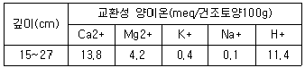
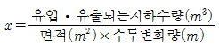
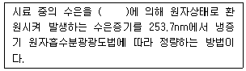
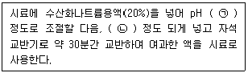
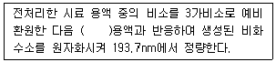
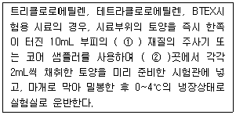
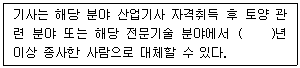
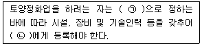
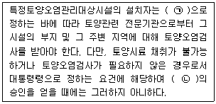
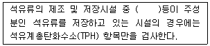

토양환경기사 (2021-09-12 기출문제)
1과목: 토양학개론
1. Langmuir 등온 흡착식의 기본 가정으로 옳지 않은 것은?
- 흡착은 가역적이다.
- 흡착지점들 사이에 상호작용이 일어난다.
- 각 흡착지정믄 단 한 개의 분자만을 수용한다.
- 유한개의 흡착지점은 각각의 오염물질에 대해 동일한 친화력을 가진다.
(정답률: 70%)

2. 토양공기에 관한 일반적인 설명으로 옳지 않은 것은?
- 토양공기 중의 N2농도는 대기 중의 농도와 비슷하다.
- 토양공기 중의 CO2, O2 농도는 대기 중의 농도보다 낮다.
- 토양공기 중의 O2 농도는 토양의 깊이가 증가할수록 감소한다.
- 토양공기 중의 CO2 농도는 여름에는 높고 겨울에는 낮은 편이다.
(정답률: 84%)
3. 모래에 지하수를 장기간 중력 배수시켰을 때, 모래의 비산출률이 0.3이고, 모래의 공극률이 0.6이었다. 비보유율은?
- 0.02
- 0.3
- 0.5
- 2.0
(정답률: 73%)
4. 토양 수분장력(pF)이 4.18일 때, 물기둥의 높이(cm)는?
- 13300
- 15136
- 17300
- 19336
(정답률: 76%)
5. 토양오염에 관한 설명으로 가장 적합한 것은?
- 오염경로가 다양하지 않으며 타 매체와의 연관성이 낮다.
- 오염의 발생과 오염에 따른 문제발생 간에 시간차가 매우 적다.
- 토양 내의 중금속은 토양입자에 흡착된 중금속의 탈착에 의해서만 수계로 유입된다.
- 수계에서 중금속의 대부분은 토양입자와 함께 침강하여 저니토(sediment)로 간다.
(정답률: 67%)
6. 중금속에 의한 토양오염의 특성에 관한 설명으로 옳은 것은?
- 카드뮴은 식물에 흡수되지 않는 것으로 알려져 있다.
- 인산비료를 사용하면 토양 중 비소의 이동성이 감소한다.
- 토양 중에 비소가 존재하면 토양 중 인의 정량이 용이해진다.
- 토양 중 구리는 이동성이 낮기 때문에 점토질 토양의 아랫방향으로 이동하는 현상이 거의 발생하지 않는다.
(정답률: 48%)
7. 질소 또는 황 순환에 관한 설명으로 옳지 않은 것은?
- Azotobacter는 질소고정에 관여하는 미생물이다.
- Nitrosomonas는 NO-2를 NO-3로 변화시키는데 관여하는 미생물이다.
- Desulfovibrio는 황산염을 황화수소로 환원시키는데 관여하는 미생물이다.
- 대기 중 기체상태의 N2는 토양미생물이나 화학적 공정을 통해 고정되어야 식물에 이용될 수 있다.
(정답률: 64%)
8. 토양 중의 질소가 공중질소로 전환되는 과정에 관여하는 화학반응은?
- 산화작용
- 환원작용
- 중화작용
- 염기화작용
(정답률: 77%)
9. 어떤 화산분출암 잔적토가 40%의 사질토, 60%의 점토로 구성되어 있고 점토 부분은 Halloysite와 Smectite로 이루어져있다. 잔적토 전체의 양이온교환능력(CEC)이 건조토양 100g당 40meq일 때, 잔적토 전체에서 각 점토 광물의 구성비는? (단, Halloysite의 CEC=15meq/건조토양 100g, Smectite의 CEC=90meq/건조토양 100g)
- Smectite: 33%, Halloysite: 66%
- Smectite: 66%, Halloysite: 33%
- Smectite: 20%, Halloysite: 40%
- Smectite: 40%, Halloysite: 20%
(정답률: 36%)
10. 토양 산성화에 의한 토양 특성에 관한 설명으로 옳은 것은?
- 토양용액의 Al3+ 농도 감소
- 토양용액의 PO3-4농도 증가
- 토양용액의 HCO-3농도 증가
- Mg2+, Ca2+등의 염기 용출 가속화
(정답률: 56%)
11. 대수층에 관한 설명으로 옳지 않은 것은?
- 지하수면의 압력이 대기압보다 높은 대수층을 자유면대수층이라 한다.
- 비피압대수층의 지하수를 자유면지하수 또는 천층수라고 한다.
- 피압대수층의 지하수는 수온과 수질의 계절적 변화가 작다.
- 피압대수층은 제1불투수층과 제2불투수층 사이에 위치하는 대수층을 말한다.
(정답률: 55%)
12. DNAPL(Dense non aqueous phase liquid)에 해당하지 않는 오염물질은?
- PCE
- TCE
- 1,1,1-TCA
- BTEX
(정답률: 76%)
13. 토양의 염류화방지를 위한 방법으로 가장 적합하지 않은 것은?
- 염류를 함유하지 않은 물을 관개수로 사용
- 지하수의 상향이동 촉진을 통한 토양표면의 염류량 희석
- 지표면에서의 수분증발을 감소시키기 위한 피복
- 아스팔트 피막이나 비닐 등의 불투수막을 이용한 하층부의 염류 상승 방지
(정답률: 59%)
14. 두께가 5m인 피압대수층에 시공된 양수정으로부터 Q=0.08m3/s의 유량으로 양수하고 있다. 양수정으로부터 10m, 20m 이격된 지점의 수위퍼텐셜이 각각 12m, 15m일 때 이 대수층의 투수량계수(m2/s)는? (단,Thiem 방정식을 이용, 자연로그 기준)
- 1.3×10-3
- 3.0×10-3
- 6.0×10-2
- 3.0×10-2
(정답률: 56%)
15. 다음 표는 특정 깊이(15~27cm)에서 교환성 양이온의 농도를 측정한 결과이다. 이를 바탕으로 구한 토양의 수소 및 염기포화도(%)는?

- 수소포화도=38.1, 염기포화도=61.9
- 수소포화도=61.9, 염기포화도=38.1
- 수소포화도=35.9, 염기포화도=64.1
- 수소포화도=64.1, 염기포화도=35.9
(정답률: 61%)
16. 폐기물 매립방법 검토 시 고려해야 할 토양 특성으로 가장 적합하지 않은 것은?
- 토성
- 투수계수
- 양이온함량
- 양이온교환용량
(정답률: 68%)
17. 토양 내 비소의 이동성에 영향을 미치는 토양 성분으로 가장 적합하지 않은 것은?
- 칼슘
- 망감
- 알루미늄
- 철
(정답률: 54%)
18. 다음 식은 무엇을 구하기 위한 것인가?

- 저류계수
- 비저류계수
- 비산출율
- 수리전도도
(정답률: 39%)
19. 다음 중 양이온교환능력(CEC)이 가장 큰 것은?
- Vermiculite
- lllite
- Kaolinite
- Chlorite
(정답률: 77%)
20. 토양의 습윤단위중량이 1.8t/m3이고, 함수비가 25%일 때, 건조단위중량과 공극비는? (단, 토양 입자의 비중은 2.65, 공극의 부피는 42m3, 토양 고상(흙)의 부피는 50m3)
- 건조단위중량: 1.44t/m3, 공극비: 0.54
- 건조단위중량: 1.44t/m3, 공극비: 0.84
- 건조단위중량: 2.12t/m3, 공극비: 0.25
- 건조단위중량: 2.12t/m3, 공극비: 1.25
(정답률: 54%)
2과목: 토양 및 지하수 오염조사기술
21. 토양오염공정시험기준상 기체크로마토그래피법에 따라 분석하는 유기인 화합물에 해당하지 않는 것은?
- 이피엔
- 파라티온
- 말라티온
- 다이아지온
(정답률: 53%)
22. 저장물질이 있는 누출검사대상시설-기상부의 시험법 중 미가압법 측정방법에 관한 설명으로 옳지 않은 것은?
- 누출검사대상시설내 기상부 높이가 200mm 이하인지를 확인한 후 가압한다.
- 가압속도가 누출검사대상시설 공간용적 1m3당 1분 이상이 되도록 가압시간을 조정한다.
- 가압 중에 노출되어 있는 배관접속부 등에 비눗물 등을 뿌려 누출여부를 확인해야 한다.
- 가압 후 15분 이상 유지시간을 두어 안정시키고 그 이후 15분 동안의 압력강하를 측정한다.
(정답률: 65%)
23. 토양오염공정시험기준상의 시약과 용액에 관한 설명으로 옳지 않은 것은?
- 따로 규정이 없는 한 1급 이상 또는 이와 동등한 규격의 시약을 사용해야 한다.
- 용액 다음의 ( )안에 N, 몇 M라고 한 것은 용액의 조제방법에 따라 조제해야 한다.
- 완충용액, 표준액 및 규정액은 각 시험항목별 시약 및 표준용액에 명시된 제조방법에 따라 제조해야 한다.
- 용액의 앞에 몇 %라고 한 것은 수용액을 말하며, 일반적으로 용액 1000mL에 녹아있는 용액의 g 수를 나타낸다.
(정답률: 72%)
24. 광선이 투과하지 않는 용기 또는 투과하지 않게 포장을 한 용기로 취급 또는 저장하는 동안 내용물이 광화학적 변화를 일으키지 아니하도록 방지할 수 있는 것은?
- 밀폐용기
- 기밀용기
- 밀봉용기
- 차광용기
(정답률: 80%)
25. 냉증기 원자흡수광광도법에 따라 토양 중의 수은을 분석할 때에 관한 내용이다. ( )안에 알맞은 것은?

- 염화제일주석용액
- 아연분말
- 사염화탄소
- 시안화칼륨용액
(정답률: 77%)
26. 토양환경평가방법의 절차로 옳은 것은?
- 기체조사, 정밀조사로 구분하여 단계별로 실시한다.
- 개황조사, 정밀조사로 구분하여 단계별로 실시한다.
- 기초조사, 개황조사, 정밀조사로 구분하여 단계별로 실시한다.
- 개황조사, 정밀조사, 평가로 구분하여 단계별로 실시한다.
(정답률: 77%)
27. 기체크로마토그래피법에 따라 토양 중의 석유계총탄화수소를 분석할 때 추출방법은?
- 가온추출법
- 자기장추출법
- 적외선추출법
- 초음파추출법
(정답률: 77%)
28. 일반지역에서 토양 시료를 채취할 때, 시료 용기에 기재해야하는 사항에 해당하지 않는 것은?
- 채취날짜
- 토양형태
- 시료명
- 토양깊이
(정답률: 67%)
29. 온도에 관한 설명으로 옳지 않은 것은?
- 냉수는 4℃ 이하로 한다.
- 온수는 60~70℃로 한다.
- 찬 곳은 따로 규정이 없는 한 0~15℃의 곳을 뜻한다.
- “수욕상 또는 수욕중에서 가열한다”라 함은 따로 규정이 없는 한 수온 100℃에서 가열함을 뜻하고 약 100℃의 증기욕을 쓸 수 있다.
(정답률: 50%)
30. 퍼지-트랩 기체크로마토그래피법에 따라 토양 중의 트리클로로에틸렌 또는 테트라클로로에틸렌을 분석할 때 사용하는 검출기는?
- 전자포착검출기(ECD)
- 불꽃이온화검출기(FID)
- 열전도검출기(TCD)
- 광이온화검출기(PID)
(정답률: 50%)
31. 퍼지-트랩 기체크로마토그래피법에 따라 토양 중의 BTEX를 분석할 때 추출액으로 사용하는 물질은?
- 에틸알코올
- 메틸알코올
- 디클로메탄
- 사염화탄소
(정답률: 75%)
32. 지장저장시설과 지하매설저장시설의 토양 시료채취 지점선정 방법으로 옳은 것은?
- 지하매설저장시설의 경우 저장시설을 중심으로 서로 반대방향에 있는 배관부위와 저장시설 부위에서 누출개연성이 높은 곳을 각각 4개 지점씩 선정한다.
- 지상저장시설의 경우 토양오염의 개연성이 높은 3개 지점을 선정하되 저장시설의 끝단으로부터 수평방향으로 1m 이상 떨어진 지점에서 이격거리의 1.5배 깊이까지로 한다.
- 지하매설저장시설의 경우 저장시설부위에서 채취하는 1개 지점은 저장시설 아랫면의 끝단에서 수직방향으로 1m 이하 떨어진 지점에서부터 이격거리의 1.5배 깊이까지로 한다.
- 지하매설저장시설의 경우 배관부위에서 채취하는 1개 지점은 저장시설로부터 가장 가까이 위치한 배관에서 수직방향으로 1m 이상 떨어진 지점에서부터 이격거리의 1.5배 깊이ᄁᆞ지로 한다.
(정답률: 34%)
33. 토양정밀조사결과를 오염등급에 따라 4등급(Ⅰ,Ⅱ,Ⅲ,Ⅳ)으로 구분하는 경우, “토양오염 대책기준 초과지역”의 등급기준을 나타내는 색은? (단, 토양정밀조사의 세부방법에 관한 규정 기준)
- 청색
- 빨강색
- 노란색
- 검정색
(정답률: 77%)
34. 저장물질이 있는 누출검사대상시설-기상부의 시험법 중 미감압법을 적용할 경우, 측정 방법을 순서대로 나열한 것은?
- 감압조작→압력안정화→압력변화측정→G,T,P값 측정
- 감압조작→압력변화측정→압력안정화→G,T,P값 측정
- 압력변화측정→압력안정화→감압조작→G,T,P값 측정
- 압력변화측정→감압조작→압력안정→G,T,P값 측정
(정답률: 60%)
35. 분석물질의 농도변화에 따른 지시값을 나타내는 검정곡선 작성방법에 해당하지 않는 것은?
- 절대검정곡선법
- 상대표준곡선법
- 상대검정곡선법
- 표준물질첨가법
(정답률: 41%)
36. 자외선/가시선 분광법에 따라 토양 중의 6가크롬을 분석할 때 시료 중에 잔류염소가 공존하면 발색을 방해한다. 이 때의 조치방법에 관한 내용 중 ( )안에 알맞은 것은?

- ㉠ 12, ㉡ 피로인산나트륨을 5mL
- ㉠ 12, ㉡ 입상활성탄을 10%
- ㉠ 5, ㉡ 아스코빈산나트륨을 5mL
- ㉠ 5, ㉡ 아비산나트륨을 2%
(정답률: 56%)
37. 자외선/가시선 분광법에 따라 0.5mg/L의 표준용액을 10mL 흡수셀에 넣고 빛을 통과시켰더니 빛의 75%가 투과되었다. 같은 조건에서 흡수셀의 미지의 용액을 넣은 결과 빛의 50%가 투과되었을 때, 미지용액의 농도(mg/L)는?
- 0.25
- 1.2
- 2.5
- 3.5
(정답률: 27%)
38. 수소화물생성-원자흡수분광광도법에 따라 토양 중의 비소를 분석할 때에 관한 설명이다. ( )안에 알맞은 것은?

- 수소화붕소나트륨
- 수소화이염화나트륨
- 수소화이질소나트륨
- 수소화염화주석나트륨
(정답률: 64%)
39. 토양오염관리대상시설지역의 시료채취 및 보관에 관한 설명이다. ( )안에 알맞은 것을 순서대로 나열한 것은?

- 유리, 5
- 테플론, 3
- 플라스틱, 3
- 스테인리스, 5
(정답률: 43%)
40. 270nm에서 중크롬산칼륨용액의 흡광도가 0.745일 때, 이 용액의 투과율(%)은?
- 12.0
- 15.8
- 18.0
- 21.3
(정답률: 49%)
3과목: 토양 및 지하수 오염정화 기술
41. 화학적 산화/환원법을 적용하여 오염토양을 처리할 때, 널리 사용되는 화학적 산화제에 해당하지 않는 것은?
- 염화나트륨
- 이산화염소
- 과망간산염
- 과산화수소수
(정답률: 52%)
42. 다음 중 원위치(in-situ) 오염토양 처리방법에 해당하지 않는 것은?
- 토양증기추출법(Soil vapor extraction)
- 공기분사법(Air sparging)
- 동전기정화법(Electrokinetic)
- 열탁착법(Thermal desorption)
(정답률: 56%)
43. Bioventing법을 적용하기 위해 산소소모율을 구하고자 한다. 주입공기의 유량이 1440m3/d, 초기 산소농도가 20.9%, 배기가스의 산소농도가 3%, 토양의 부피가 2500m3, 공극률이 15%일 때, 산소소모율(%O2/d)은?
- 34.5
- 46.4
- 52.2
- 68.7
(정답률: 53%)
44. 황화나트륨(Na2S)을 사용한 오염토양의 불용화 처리(화학적 처리)에 관한 내용으로 옳지 않은 것은?
- 수용성 납화합물이 존재하는 오염토양에 황화나트륨을 첨가하면 황화납이 생성된다.
- 카드뮴화합물이 존재하는 오염토양에 황화나트륨을 첨가하면 황화카드뮴이 생성된다.
- 수용성 수은화합물이 존재하는 오염토양에 황화나트륨을 첨가하면 황화수은이 생성된다.
- 6가 크롬화합물이 존재하는 오염토양에 황화나트륨을 첨가하면 2가 크롬이 생성된다.
(정답률: 65%)
45. 다음 중 토양증기추출법(SVE)을 적용했을 때 제거가 가장 용이한 오염물질은?
- PCB
- TCE
- PAH
- 다이옥신
(정답률: 50%)
46. 식물정화법(Phytoremediation)의 대표적인 처리기작에 해당하지 않는 것은?
- 식물에 의한 추출
- 근권에 의한 분해
- 식물에 의한 응고
- 식물에 의한 안정화
(정답률: 66%)
47. 토양경작법(Land farming)에 관한 내용으로 옳지 않은 것은?
- 바이오파일(Biopile)과 오염물질 제거 기작이 동일하다.
- 유기물질과 무기물질을 동시에 처리하는데 효과적이다.
- 유기용매가 대기 중으로 방출되기 전에 미리 처리해야 한다.
- 오염물질의 분포 깊이와 분산정도에 따라 처리효율이 달라질 수 있다.
(정답률: 50%)
48. 열탈착법에 관한 내용으로 옳지 않은 것은?
- 수분 함량이 높은 오염토양의 경우 별도의 전처리가 필요 없다.
- 같은 용량의 소각공정에 비해 발생하는 가스량이 상대적으로 적다.
- 토양 내의 유기염소, 유기인 살충제를 검출한계 이하까지 제거할 수 있다.
- 토양 입경이 매우 크거나 입자가 거친 경우 처리시설에 손상이 발생할 수 있다.
(정답률: 78%)
49. 열탈착 공정에 사용되는 장치에 해당하지 않는 것은?
- 로터리 탈착장치
- 유동상 탈착장치
- 회분식 탈착장치
- 마이크로파 탈착장치
(정답률: 54%)
50. 토양세척법(Soil washing)의 효율에 영향을 미치는 인자로 가장 적합하지 않은 거은?
- 토양의 색깔
- 오염물질의 농도
- 토양의 pH와 완충능력
- 토양의 양이온교환용량
(정답률: 76%)
51. 바이오파일(Biopile) 기법의 특징으로 옳지 않은 것은?
- 지하수오염 대비책이 필요하다.
- 오염 토양에 대한 굴착이 필요하다.
- 토양경작법(Land farming)에 비해 적은 부지가 요구된다.
- 저분자 할로겐 휘발성 물질의 처리에는 적용이 적절하지 않다.
(정답률: 42%)
52. 40kg의 벤젠(CδHδ)으로 오염된 토양을 원위치에서 정화하고자 한다. 벤젠의 분해에 필요한 산소를 과산화수소로 공급할 때, 필요한 이론적인 과산화수소의 양(kg)은? (단, 2H2O2→2H2O+O2, 벤젠은 완전분해)
- 65.38
- 130.76
- 261.54
- 296.41
(정답률: 45%)
53. 토양증기추출법(SVE)에 관한 설명으로 옳지 않은 것은?
- 불포화대수층에 적용이 유리하다.
- 투과성이 낮은 토양에서는 오염물질의 제거효율이 낮은 편이다.
- 배출된 공기를 처리하기 위한 별도의 공정이 필요 없다.
- 지반구조가 복잡하므로 총 처리시간을 예측하기가 어렵다.
(정답률: 68%)
54. 오염토양의 부피가 1000m3, 토양의 평균공극률이 40%, 토양수 내의 오염물질 평균농도가 30ppm일 때, 토양수로 포화된 오염토양 내에 수용액상으로 존재하는 오염물의 질량(kg)은? (단, 오염물질이 토양수 내에 수용액상으로만 존재한다고 가정)
- 4
- 8
- 12
- 16
(정답률: 78%)
55. 자연저감법에 관한 내용으로 옳지 않은 것은?
- 수용체로 오염물질의 확산이 진행될 때 적용이 효과적이다.
- 오염물질의 농도가 감소될 때까지는 오염현장을 사용할 수 없다.
- 오염물질이 분해되기 전에 휘발 등으로 인한 2차오염이 발생할 수 있다.
- 자연저감 기간 중 시스템 내에 물리ㆍ화학적 특성변화가 발생하여 오염물질이 확산될 수 있다.
(정답률: 63%)
56. 투수성반응벽체 공법을 적용하여 오염지하수를 정화하고자 한다. 반응벽체의 두께가 3m, 지하수의 선속도가 0.2m/h일 때, 지하수의 반응벽체 통과시간(h)은?
- 1.5
- 6
- 15
- 60
(정답률: 63%)
57. 생물학적통기법의 적용 가능성을 판단하기 위한 실험항목에 해당하지 않는 것은?
- 영향반경시험
- 미생물 추적자실험
- 미생물 생분해실험
- 미생물 호흡률 측정실험
(정답률: 65%)
58. Bioventing법에 관한 내용으로 옳지 않은 것은?
- 처리효율은 토양 함수율의 영향을 받는다.
- 휘발성 유기물질과 준휘발성 유기물질을 처리할 수 있다.
- 현장 지반구조 및 오염물질 분포에 따른 처리기간의 변동이 심하다.
- 진공압(진공정도)이 낮을수록 시설비용 및 유지비용이 높아지고 균일한 처리가 어려워진다.
(정답률: 62%)
59. 활성탄 흡착을 통해 지하수 5000m3의 벤젠 농도를 35mg/L에서 2mg/L로 저감하고자 할 때, 필요한 활성탄의 양(kg)은? (단, Freundlich 흡착등온식 이용, K는 0.4, n은 0.5)
- 24
- 103
- 412
- 588
(정답률: 18%)
60. 열탈착 기술의 적용대상으로 가장 적합하지 않은 것은?
- 납으로 오염된 토양
- 윤활유로 오염된 토양
- 휘발성 유기물질로 오염된 토양
- 준휘발성 유기물질로 오염된 토양
(정답률: 53%)
4과목: 토양 및 지하수 환경관계법규
61. 토양환경보전법령상 위해성평가를 하려는 자가 작성해야하는 위해성평가 계획서에 포함되어야하는 사항에 해당하지 않는 것은?
- 독성평가 자료
- 현장 조사 방법
- 오염지역 및 범위
- 오염물질의 노출경로
(정답률: 37%)
62. 토양환경보전법령상 환경부장관은 토양보전을 위해 몇 년을 주기로 토양보전에 관한 기본계획을 수립하여야 하는가?
- 1년
- 3년
- 5년
- 10년
(정답률: 66%)
63. 토양환경보전법령상 특정토양오염관리대상 시설의 종류에 해당하지 않는 것은?
- 송유관시설
- 석유류의 제조 및 저장시설
- 유해화학물질의 제조 및 저장시설
- 토양오염물질의 제조 및 저장시설
(정답률: 50%)
64. 토양환경보전법령상 토양오염물질에 해당하지 않는 것은?
- 시안화합물
- 유기인화합물
- 다이옥신
- 동ㆍ식물성 유류
(정답률: 64%)
65. 토양환경보전법령상 속임수나 그 밖의 부정한 방법으로 토양환경전문기관의 지정을 받거나 토양정화업의 등록을 한 자가 받는 벌칙은?
- 2년 이하의 징역 또는 1500만원 이하의 벌금에 처함
- 2년 이하의 징역 또는 1000만원 이하의 벌금에 처함
- 1년 이하의 징역 또는 1000만원 이하의 벌금에 처함
- 6개월 이하의 징역 또는 500만원 이하의 벌금에 처함
(정답률: 60%)
66. 토양환경보전법령상 토양환경평가 중 “시료의 채취 및 분석을 통한 토양오염의 정도와 범위 조사”는 어떤 조사에 해당하는가?
- 개황조사
- 기초조사
- 정밀조사
- 오염도조사
(정답률: 63%)
67. 지하수의 수질보전 등에 관한 규칙상 지하수의 수질기준 항목에 해당하지 않은 것은? (단, 생활용수로 사용하는 경우)
- 구리
- 크실렌
- 염소이온
- 질산성질소
(정답률: 22%)
68. 토양환경보전법령상 토양오염우려기준 적용을 위한 지목 분류상 “2지역”에 해당하는 곳은?
- 주차장
- 과수원
- 하천
- 학교용지
(정답률: 43%)
69. 지하수법령상 지하수법에 따라 허가를 받고 지하수를 개발하는 자가 해당 시설 및 토지를 원상복구 해야 하는 경우에 해당하는 것은?
- 수질불량으로 지하수를 개발ㆍ이용할 수 없는 경우
- 지형 여건상 원상 복구할 필요가 없다고 시장ㆍ군수ㆍ구청장이 인정하는 경우
- 지하수의 수위관측망 또는 수질관측망으로 이용할 필요가 있다고 시장ㆍ군수ㆍ구청장이 인정하는 경우
- 법 또는 다른 법률에 따라 허가ㆍ인가 등을 받거나 신고를 하고 계속 지하수를 개발ㆍ이용하는 경우
(정답률: 65%)
70. 토양환경보전법령상 토양오염조사기관으로 지정받으려는 자가 갖추어야 하는 기술인력에 관한 내용 중 ( )안에 알맞은 숫자는?

- 5
- 4
- 3
- 2
(정답률: 74%)
71. 토양환경보전법령상 자연적인 원인으로 인한 토양오염이라고 “대통령령으로 정하는 방법”에 따라 입증된 부지의 오염토양을 정화하려는 경우 위해성평가를 실시할 수 있다. “대통령령으로 정하는 방법”에 해당하지 않는 것은?
- 해당 오염물질이 대상 지역의 영농활동으로부터 기인하였음을 증명할 것
- 해당 오염물질의 농도가 주변지역의 토양분석결과와 비슷함을 증명할 것
- 해당 오염물질이 대상 부지의 기반암으로부터 기인하였음을 증명할 것
- 과학적인 방법으로 해당 오염물질이 자연적인 원인으로 발생하였음을 증명할 것
(정답률: 60%)
72. 지하수법령상 지하수의 개발ㆍ이용 허가 시 시장ㆍ군수ㆍ구청장이 허가를 하지 않거나 취수량을 제한할 수 이는 경우는? (단, 그 밖에 지하수를 보전하기 위해 필요하다고 인정되는 경우로서 대통령령으로 정하는 경우는 제외)
- 자연생태계를 해칠 가능성이 낮은 경우
- 동력장치를 사용하지 아니하고 가정용 우물 또는 공공우물을 개발ㆍ이용하는 경우
- 지하수의 채취로 인해 인근지역 수원의 고갈 또는 지반의 침하를 가져올 우려가 있거나 주변 시설물의 안전을 해칠 우려가 있는 경우
- 자연히 흘러나오는 지하수 또는 다른 법률의 규정에 의한 허가ㆍ인가 등을 받고 시행하는 사업에서 발생하는 지하수를 이용하는 경우
(정답률: 75%)
73. 토양환경보전법령상 토양정화업의 등록요건 중 시료채취기의 기준은?
- 시료채취기 2대(깊이 3m 이상 시료채취가 가능할 것)
- 시료채취기 1대(깊이 3m 이상 시료채취가 가능할 것)
- 시료채취기 2대(깊이 6m 이상 시료채취가 가능할 것)
- 시료채취기 1대(깊이 6m 이상 시료채취가 가능할 것)
(정답률: 74%)
74. 토양환경보전법령상 환경부장관이 고시하는 측정망설치계획에 포함되어야 할 사항에 해당하지 않는 것은?
- 측정 항목
- 측정망 배치도
- 측정망 설치시기
- 측정지점의 위치 및 면적
(정답률: 62%)
75. 토양환경보전법령상 토양오염조사 기관에 해당하지 않는 곳은?
- 유역환경청
- 국립환경과학원
- 국립농업과학원
- 시ㆍ도 보건환경연구원
(정답률: 62%)
76. 토양환경보전법령상 토양관련전문기관 또는 토양정화업의 기술인력이 이수해야 하는 교육과정은?
- 환경보전협회장이 개설하는 토양환경관리의 교육과정
- 시ㆍ도보건환경원장이 개설하는 토양환경관리의 교육과정
- 국립환경과학원장이 개설하는 토양환경관리의 교육과정
- 국립환경인력개발원장이 개설하는 토양환경관리의 교육과정
(정답률: 55%)
77. 토양환경보전법령상 토양정화업의 등록에 관한 규정이다. ( )안에 알맞은 것은?

- ㉠ 대통령령, ㉡ 환경부장관
- ㉠ 환경부령, ㉡ 환경부장관
- ㉠ 대통령령, ㉡ 시ㆍ도지사
- ㉠ 환경부령, ㉡ 시ㆍ도지사
(정답률: 55%)
78. 토양환경보전법령상 상시측정, 토양오염실태조사 또는 토양정밀조사 결과 우려기준을 넘는 경우 시ㆍ도지사 또는 시장ㆍ군수ㆍ구청장이 정화책임자에게 명할 수 있는 조치에 해당하지 않는 것은?
- 해당 토양오염물질의 사용제한 또는 사용중지
- 토양오염관리대상시설의 개선 또는 이전
- 토양오염유발시설의 폐쇄조치
- 오염토양의 정화
(정답률: 54%)
79. 토양환경보전법령상 토양오염검사에 관한 내용 중 ( )안에 알맞은 것은?

- ㉠: 대통령령, ㉡: 토양관련전문기관
- ㉠: 환경부령, ㉡: 토양관련전문기관
- ㉠: 대통령령, ㉡: 특별자치도지사ㆍ시장ㆍ군수ㆍ구청장
- ㉠: 환경부령, ㉡: 특별자치도지사ㆍ시장ㆍ군수ㆍ구청장
(정답률: 52%)
80. 토양환경보전법령상 특정토양오염관리대상 시설 중 석유류의 제조 및 저장시설의 토양 오염검사항목에 관한 설명 중 ( )안에 알맞은 것은?

- 경유
- 벤젠
- 에틸벤젠
- 벤조(a)피렌
(정답률: 59%)